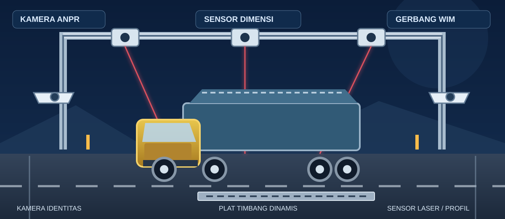

Plat sensor pada permukaan lajur membaca beban kendaraan saat kendaraan tetap bergerak. Hasil dibandingkan dengan JBI acuan.
PROTOTIPE SISTEM TRANSPORTASI CERDAS
Deteksi kendaraan ODOL melalui teknologi WIM dan sensor dimensi
Kendaraan melintas pada area sensor. Sistem membaca berat secara dinamis, kamera ANPR mengenali identitas kendaraan, dan sensor dimensi memeriksa profil panjang, lebar, serta tinggi. Hasilnya dikirim ke dashboard untuk ditinjau petugas.
● WIM aktif (simulasi)● ANPR & CCTV● Sensor dimensi

Ilustrasi rekayasa konseptual alat pemeriksaan; bukan dokumentasi instalasi aktual.
Peralatan yang bekerja pada sistem
Urutan fungsi peralatan pada area pemeriksaan kendaraan.
Kamera menangkap citra kendaraan dan pelat nomor untuk pencatatan identitas serta bukti visual.
Sensor laser atau pemindai profil memperkirakan panjang, lebar, dan tinggi kendaraan yang melintas.
Data sensor dipadukan, ditandai jika ada indikasi, lalu diteruskan kepada petugas untuk pemeriksaan lanjutan.
Aturan: Overload jika Berat WIM > JBI • Over Dimension jika P/L/T > Batas Acuan
| ID | Jenis & Sumbu | JBI / WIM (Ton) | Overload % | P x L x T (m) | Indikasi Sistem | Uji Salah Klasifikasi | Keputusan Verifikator |
|---|
Uji verifikasi & salah klasifikasi
Lima contoh uji khusus pada dataset untuk menunjukkan mengapa keputusan akhir perlu pemeriksaan manusia.
VEH-026 · Potensi false positive WIM — indikasi overload +2,5% perlu ditinjau terhadap toleransi dan kalibrasi.
VEH-027 · Potensi false negative WIM — kendaraan perlu pemeriksaan manual karena dinamika saat melintas.
VEH-028 · Sensor dimensi membaca terpal — petugas memastikan bagian yang terukur.
VEH-029 · Gangguan ANPR — citra pelat dan waktu deteksi dicocokkan manual.
VEH-030 · Koreksi klasifikasi sumbu/JBI — jenis kendaraan harus dipastikan sebelum keputusan.
Acuan simulasi & catatan regulasi
Parameter awal berdasarkan kelompok kendaraan pada dataset yang diberikan.
| Kelompok | JBI | Batas P × L × T |
|---|---|---|
| 2 sumbu | 16 ton | 9 × 2,5 × 4,2 m |
| 3 sumbu | 24 ton | 12 × 2,5 × 4,2 m |
| 4 sumbu | 32 ton | 15 × 2,5 × 4,2 m |
| 5 sumbu | 42 ton | 18 × 2,5 × 4,2 m |
Dataset menyebut UU 22/2009, PP 55/2012, PM 18/2021, dan SE Menhub 116/2021 sebagai referensi awal. Parameter dan dasar hukum wajib diperiksa kembali pada dokumen resmi sebelum digunakan untuk penetapan pelanggaran atau sanksi.
Catatan penting: Dataset dan angka di dashboard merupakan data simulasi akademik. Hasil WIM/sensor adalah indikasi awal; status pelanggaran, tindakan, dan sanksi hanya ditentukan setelah pemeriksaan oleh petugas berwenang. Estimasi dampak kerusakan jalan tidak sama dengan denda dan tidak dihitung sebagai nilai pembayaran pada versi ini.